Tipos de Variáveis
As principais são numéricas, sendo int(para números inteiros) e float(para números com ponto flutuante ou real) e as strings(str). Temos também a variável bool (boolean).
São declaradas da seguinte maneira:
-
Para atribuir o valor à uma variável do tipo string, é necessário utilizar as aspas simples (‘ ‘) ou dupla (“ “).
Ex: nome = “Carlos”
-
Para as variáveis numéricas, não é necessário nenhuma aspas.
Ex: idade = 15
Peso = 50.7
-
Para as variáveis boolean, apenas atribuir o valor verdadeiro ou falso
Ex: status = True/False OBS: A primeira letra deve ser maiúscula.
OBS: A primeira letra deve ser maiúscula.
A indentação no Python é obrigatória, visto que não se usa {} e nem () como no JS.
Gerenciamento de Memória
Em algumas linguagens, disponibilizam um tamanho fixo para cada variável.
Em C, por exemplo, quando atribuímos uma variável, primeiro a declaramos, reservando um espaço na memória e, em seguida, armazenamos o valor no ponto de memória alocado. Podemos criar outra variável com o mesmo valor repetindo o processo, terminando com dois pontos na memória, cada um com seu próprio valor que é equivalente ao do outro.
Python é um pouco diferente. A linguagem atribui a cada variável um valor, ou seja, o nome da variável faz referência a um valor. Internamente, Python tem um contador interno de quantas referências um objeto possui, se o contador chegar a zero a linguagem remove o objeto, liberando a memória.
Interpretação e Compilação
Python é uma linguagem interpretada ou uma linguagem de script. Sendo o interpretador do Python uma aplicação executada na linha de comando. Python é tanto uma linguagem interpretada quanto uma linguagem compilada. Um compilador traduz linguagem Python em linguagem de máquina - código Python é traduzido em um código intermediário que deve ser executado por uma máquina virtual conhecida como PVM (Python Virtual Machine).
O interpretador faz esta 'tradução' em tempo real para código de máquina, ou seja, em tempo de execução. Já o compilador traduz o programa inteiro em código de máquina de uma só vez e então o executa, criando um arquivo que pode ser rodado (executável). O compilador gera um relatório de erros (casos eles existam) e o interpretador interrompe a tradução quando encontra um primeiro erro.
Comentários
Notação Inline
Utilizamos o caractere cerquilha # para demarcarmos que tudo que estiver a frente desse caractere, deve ser ignorado pelo interpretador do Python, por exemplo:
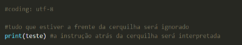Notação Multiline
A linguagem Python também disponibiliza uma notação para demarcarmos que um conjunto de linhas deve ser ignorado pelo interpretador. Essa notação se dá pelo uso de 3 aspas simples, ou entao, 3 aspas duplas. Nestes casos, tudo que estiver delimitado pelas aspas não será interpretado, por exemplo:
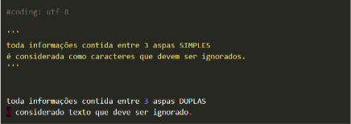No código acima, definimos 2 blocos de códigos que serão ignorados pelo interpretador do Python ou então, podemos dizer que, serão interpretados como se fossem comentários e que dispensam qualquer avaliação por parte do interpretador.
Estruturas de condição com o IF
O IF é uma estrutura de condição que permite avaliar uma expressão e, de acordo com seu resultado, executar uma determinada ação.
No código a seguir, temos um exemplo de uso do IF no qual verificamos se a variável idade é menor que 20. Em caso positivo, imprimimos uma mensagem na tela, e em caso negativo, o código seguirá normalmente, desconsiderando a linha 3.
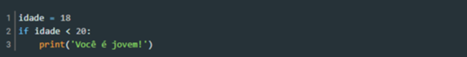Como podemos notar, essa estrutura é formada pela palavra reservada if, seguida por uma condição e por dois pontos (:). As linhas abaixo dela formam o bloco de instruções que serão executadas se a condição for atendida. Para isso, elas devem ser identadas corretamente, respeitando a especificação do Python. Nesse código, apenas a instrução da linha 3 é executada, e por isso ela está mais avançada. Se fosse necessária a execução de outras linhas no caso da idade ser menor que 20, elas também deveriam estar no mesmo nível de identação da linha 3.
Estrutura de condição IF-ELIF-ELSE
Vimos anteriormente como utilizar o IF para executar uma ação caso uma condição seja atendida. No entanto, nenhum comportamento específico foi definido para o caso de a condição não ser satisfeita. Quando isso é necessário, precisamos utilizar a palavra reservada else. Adicionalmente, se existir mais de uma condição alternativa que precisa ser verificada, devemos utilizar o elif para avaliar as expressões intermediárias antes de usar o else.
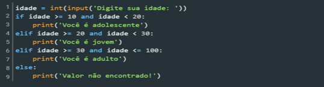Na linha 2, verificamos se o valor informado está dentro de uma faixa de valores específica. Caso a condição seja satisfeita, o programa executará a linha 3. Por outro lado, caso o resultado não seja o esperado, então o programa verificará o próximo condicional, na linha 4 e, caso ele seja verdadeiro, a linha 5 será executada. O mesmo ocorre para a verificação da linha 6. Por fim, se nenhuma das condições foi satisfeita, o programa executará o que é especificado no bloco else.
Loops com FOR e WHILE
Em algumas situações, é comum que uma mesma instrução (ou conjunto delas) precise ser executada várias vezes seguidas. Nesses casos, normalmente utilizamos um loop (ou laço de repetição), que permite executar um bloco de código repetidas vezes, enquanto uma dada condição é atendida.
Em Python, os loops são codificados por meio dos comandos for e while. O primeiro nos permite percorrer os itens de uma coleção e, para cada um deles, executar um bloco de código. Já o while, executa um conjunto de instruções várias vezes enquanto uma condição é atendida.
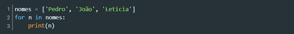Em Python, os loops são codificados por meio dos comandos for e while. O primeiro nos permite percorrer os itens de uma coleção e, para cada um deles, executar um bloco de código. Já o while, executa um conjunto de instruções várias vezes enquanto uma condição é atendida.
O comando while, por sua vez, faz com que um conjunto de instruções seja executado enquanto uma condição for atendida. Quando o resultado passa a ser falso, a execução é interrompida, saindo do loop, e passa para o próximo bloco.
No código a seguir, vemos um exemplo de uso do laço while, onde definimos a variável contador, iniciando com 0, e enquanto seu valor for menor que 5, executamos as instruções das linhas 3 e 4.
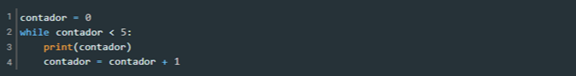Observe que na linha 4 incrementamos a variável contador, de forma que em algum momento seu valor igual a 5. Quando isso for verificado na linha 2, o laço será interrompido. Caso a condição de parada nunca seja atingida, o loop será executado infinitamente, gerando problemas no programa.
Estruturas de controle, condicionais e de repetição, estão presentes na maioria das linguagens de programação e representam uma parte fundamental de cada uma delas. Sendo assim, é muito importante conhecer a sintaxe e o funcionamento dessas estruturas.
Matrizes
Matrizes são estruturas bidimensionais (tabelas) com linhas e colunas muito importantes na matemática, utilizadas por exemplo para a resolução de sistemas de equações e transformações lineares.
Em Python, uma matriz pode ser representada como uma lista de listas, onde um elemento da lista contém uma linha da matriz, que por sua vez corresponde a uma lista com os elementos da coluna da matriz.
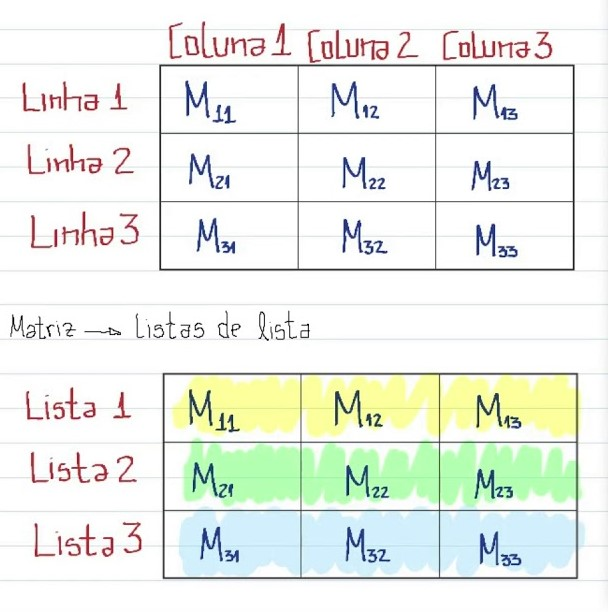 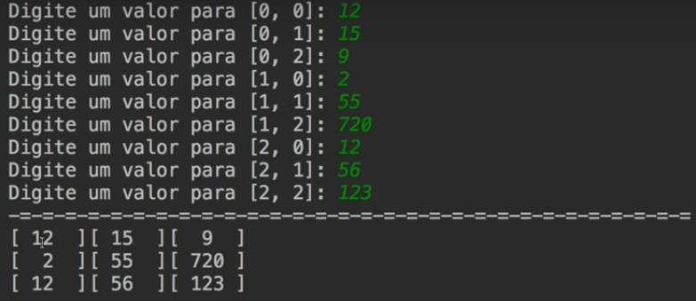 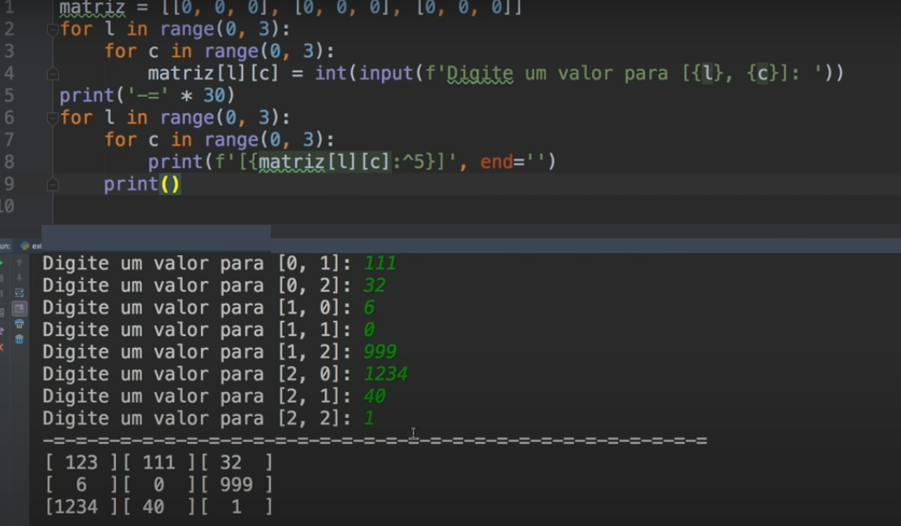 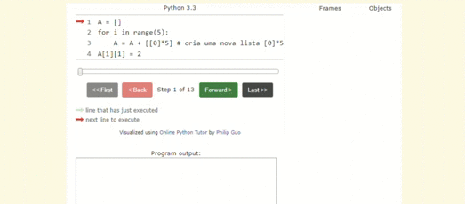Vetores
Em Python, uma lista é representada como uma sequência de objetos separados por vírgula e dentro de colchetes [], assim, uma lista vazia, por exemplo, pode ser representada por colchetes sem nenhum conteúdo. A Listagem 1 mostra algumas possibilidades de criação desse tipo de objeto.
Em Python, uma matriz pode ser representada como uma lista de listas, onde um elemento da lista contém uma linha da matriz, que por sua vez corresponde a uma lista com os elementos da coluna da matriz.
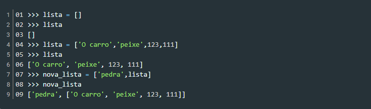